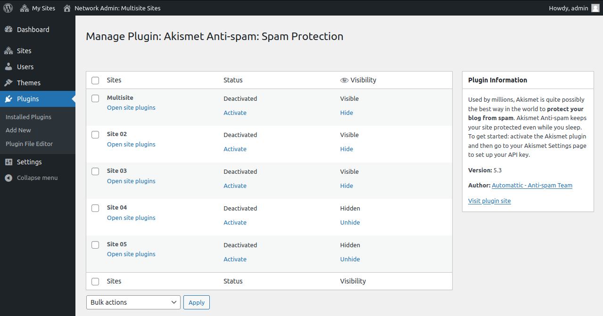

This plugin helps managing WordPress plugins accross a multisite network. It provides advanced visibility options and the possibility to force de-/activation for certain sites in your network.
The visibility of the akismet plugin is managed here.
Currently this plugin is not in the official wp.org repository yet. The active development happens at the github repository. You can find the information about contributing there.
Universum Tonal
This is an experiment to document the development of creating music made from the sounds of the universe. The goal is to extract the radio waves of certain celestial objects convert them into sounds, wave tables and samples which will be used in samplers, mixers and synthesizers.
As all my projects this is a slow-developing one as well. You can see the progress in its github repository.
LSTE
LSTE is a very simple template engine to generate pure HTML websites. It basically has no features excepts stichting several template parts together.
Cauldron is an ultra lightweight plugin system. The core feature is a WordPress-like hook system. Cauldron doesn't use any external dependencies. It also provides a simple database wrapper. The goal for cauldron is to have a simple mini-php-framework for small projects.
{kind=link}